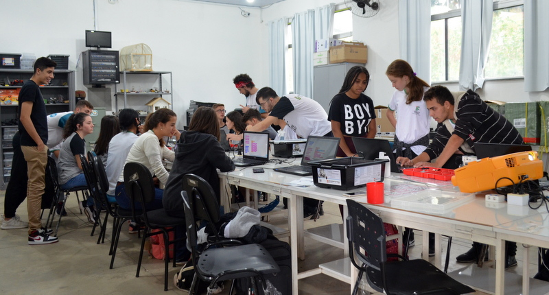
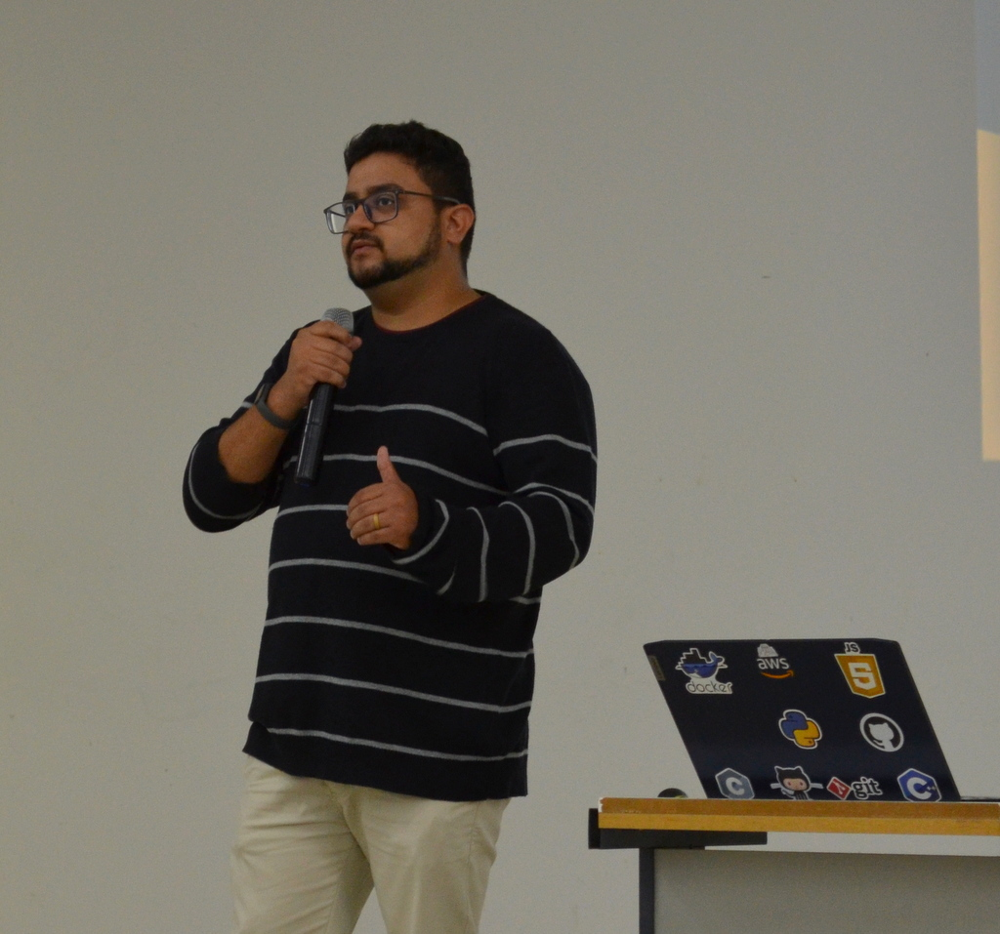
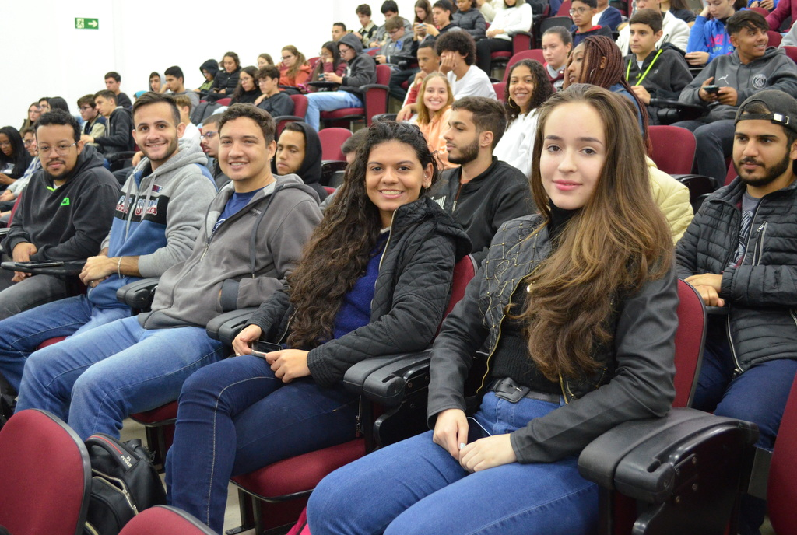

Computer Day
O Computer Day do IFSULDEMINAS - Campus Machado é um evento anual de um dia que promove a integração entre os estudantes do curso de Sistemas de Informação e do Curso Técnico em Informática Integrado. Durante o evento, os participantes têm a oportunidade de:
- Assistir a palestras sobre temas atuais da área de tecnologia;
- Participar de minicursos práticos e enriquecedores;
- Interagir em momentos de integração com sorteios de brindes;
- Conhecer projetos desenvolvidos pelos próprios alunos, como: Autobots, Pixels e Meninas Digitais.

Curso de Arduino

Palestra sobre Mercado de Trabalho

Alunos do curso de Sistemas de Informação de manutenção